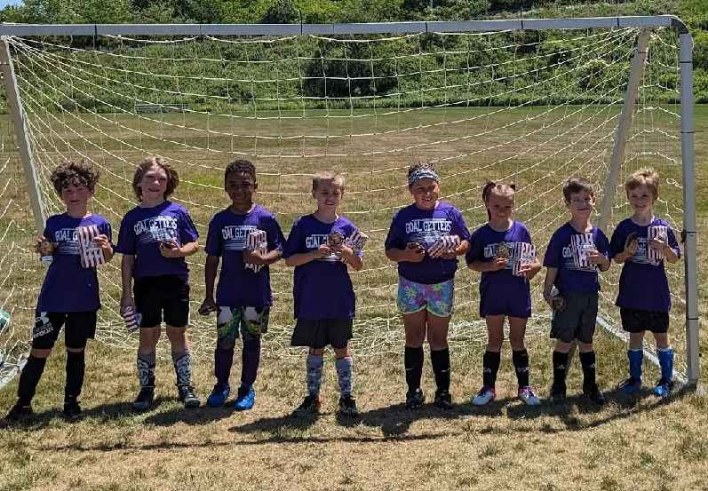

Welcome to Geneva Recreational Soccer
[Add your introductory text about the recreational soccer program here. This is where you can describe the philosophy, approach, and overall goals of the recreational program.]
[Add more paragraphs as needed to fully describe your recreational soccer program, its benefits, and what makes it special.]